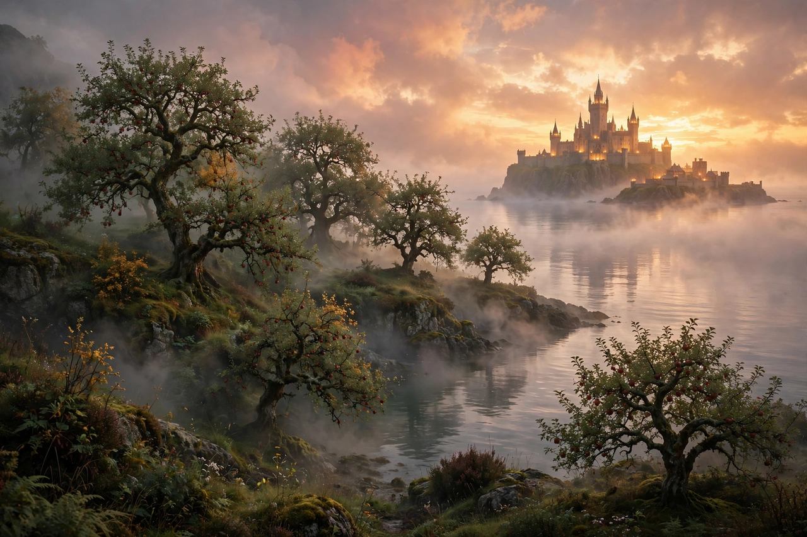

Otherworld
The Otherworld is a realm of the supernatural in Celtic mythology — a world of everlasting youth, beauty, health, abundance, and joy, inhabited by gods, spirits, and sometimes the dead. It exists alongside and interwoven with the mortal world rather than in a separate heaven: it may lie beneath the earth, inside ancient burial mounds (sídhe), beneath lakes, or on islands across the western sea.

| Welsh name | Annwn, Annwfn |
|---|---|
| Irish names | Tír na nÓg, Mag Mell, Emain Ablach, Tech Duinn |
| Entrances | Sídhe mounds, lakes, caves, mist, the sea |
| Inhabitants | Tuatha Dé Danann, Aos Sí, heroes, the dead |
| Feast day link | Samhain |
In Irish tradition
In Irish mythology the Otherworld is known by many names: Tír na nÓg ("Land of the Young"), Mag Mell ("Plain of Delight"), and Emain Ablach ("Emain of the Apples"). After their defeat by the Milesians, the Tuatha Dé Danann withdraw into the hollow hills, the sídhe, becoming the Aos Sí. Heroes such as Oisín and Bran mac Febail are lured there by otherworldly women; time flows differently — Oisín spends what seem three years but are three hundred — and a visitor who sets foot on mortal soil again may crumble to age or dust.
In Welsh tradition
The Welsh Otherworld, Annwn, appears in the First Branch of the Mabinogi, where Pwyll rules it for a year in the shape of its king Arawn, and in the poem Preiddeu Annwfn ("The Spoils of Annwfn"), where Arthur raids it by ship for a magic cauldron. Unlike the Irish paradise-islands, Annwn is sometimes portrayed as a place of danger, with cauldrons guarded by otherworldly hags and demons, though it is also a source of swine given to mankind by Arawn.
Access and festivals
The boundary between worlds thins at liminal times and places: at the festival of Samhain (1 November), at dusk, in mist, at fords and shorelines. Entrance may come by invitation of an otherworldly messenger, through music, through entering a mound, or by being carried off — sometimes never to return.
Influence
The Celtic Otherworld strongly influenced later European legend — Avalon, fairyland, and the elvish realms of modern fantasy — and remains a central concept in the study of Celtic religion and literature.
See also
References
- MacKillop, James, Dictionary of Celtic Mythology, Oxford University Press, 1998.
- Sjoestedt, Marie-Louise, Celtic Gods and Heroes, 1949.